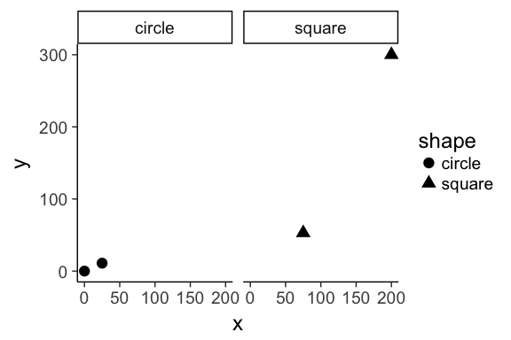
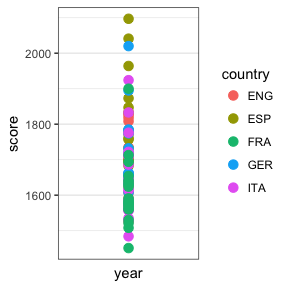
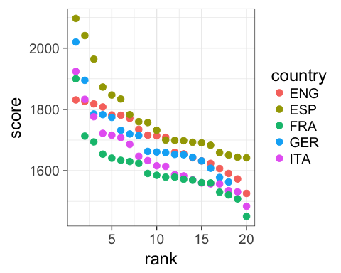
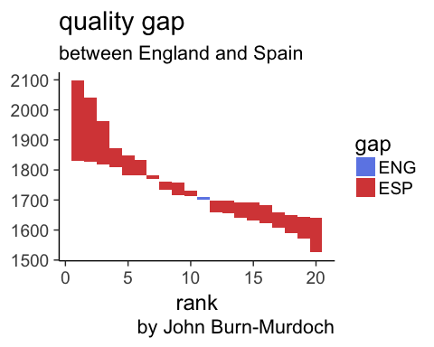

3 May 2017
ggplot2
Before, there was ggplot1
Released in 2005 until 2008 by Hadley Wickham.
If the pipe ( %>% in 2014) had been invented before,
ggplot2would have never existed Hadley Wickham
Original syntax
# devtools::install_github("hadley/ggplot1")
p <- ggplot(mtcars, list(x = mpg, y = wt)) %>%
scbrewer(ggpoint(p, list(colour = gear)))with the pipe
# devtools::install_github("hadley/ggplot1")
library(ggplot1)
mtcars %>%
ggplot(list(x = mpg, y = wt)) %>%
ggpoint(list(colour = gear)) %>%
scbrewer()ggplot2
library(ggplot2)
mtcars %>%
ggplot(aes(x = mpg, y = wt)) +
geom_point(aes(colour = as.factor(gear))) +
scale_color_brewer("gear", type = "qual")Issue
Introduced a break in the workflow from %>% to +
What is ggplot2
released in 2007
ggplot2stands for grammar of graphics plot version 2- Inspired by Leland Wilkinsons work on the grammar of graphics in 2005.
- The idea is to split a graph into layers: for example axis, curve(s), labels.


Simple example
Wickham 2007
dataset
| x | y | shape |
|---|---|---|
| 25 | 11 | circle |
| 0 | 0 | circle |
| 75 | 53 | square |
| 200 | 300 | square |
3 layers combined

Faceting (treillis / latticing)
What is we want to split circles and squares?
Faceting
Wickham 2007
Split by the shape

Redundancy
Now, dot shapes and facets give the same information. Shapes could be freed for another meaningful variable
layers

for real
tribble(
~x, ~y, ~shape,
25L, 11L, "circle",
0L, 0L, "circle",
75L, 53L, "square",
200L, 300L, "square"
) %>%
ggplot(aes(x = x, y = y, shape = shape)) +
geom_point(size = 4) +
facet_wrap(~ shape) +
coord_cartesian() +
theme_classic(base_size = 18)

Motivation for this layered system
football example
[Data visualisation] is not meant just to be seen but to be read, like written text - Alberto Cairo
Questions
- which countries have the best teams?
- which leagues are the most/least balanced?
- what is the 'quality gap' between a given pair of leagues?
- how does the nth best team in league x today compare to its predecessors?
- how have all of the above changed over time?
Stat solutions
- linear comparison
- distribution of parts within the whole
- difference in area between two curves
- value in context
- evolution of an already detailed pattern over time
Visual solutions
points
points on a line
ribbon*
shaded range
faceted plots
source John Burn-Murdoch working at the Financial Times
1. which countries have the best teams in 2016?
library(tidyverse)
allSeasons <- read_rds("allseasons.rds")
oneSeason <- allSeasons %>% filter(year == 2016)ggplot(oneSeason
,aes(x = year, y = score, colour = country)) +
geom_point(size = 3) +
scale_x_discrete() +
theme_bw()
Draw your first plot
library("ggplot2")
ggplot(iris) +
geom_point(aes(x = Petal.Width, y = Petal.Length))

ggplot uses a data.frame and builds the plot layer by layer.
Geoms
Geoms, or geometric objects, define the type of plot which will be drawn.
Examples of geom are:
geom_point()to draw a scatter plotgeom_boxplot()to draw boxplotsgeom_line()to draw linesgeom_histogram()to draw histogramsgeom_density()to draw density curves- Have a look at the cheatsheet or the ggplot2 online documentation to list more possibilities.
Mapping aesthetics
aesthetics map the variables of a data.frame to the variable each ggplot2 geom is expecting.
For example geom_point() (used to draw a scatter plot) requires the x and y coordinates for each point.
ggplot(iris) + geom_point(aes(x = Petal.Width, y = Petal.Length))
| Sepal.Length | Sepal.Width | Petal.Length | Petal.Width | Species |
|---|---|---|---|---|
| 5.1 | 3.5 | 1.4 | 0.2 | setosa |
| 4.9 | 3.0 | 1.4 | 0.2 | setosa |
| 4.7 | 3.2 | 1.3 | 0.2 | setosa |
| 4.6 | 3.1 | 1.5 | 0.2 | setosa |
| 5.0 | 3.6 | 1.4 | 0.2 | setosa |
| 5.4 | 3.9 | 1.7 | 0.4 | setosa |
Mapping aesthetics
aesthetics map the variables of a data.frame to the variable each ggplot2 geom is expecting.
For example geom_point() (used to draw a scatter plot) requires the x and y coordinates for each point.
ggplot(iris) + geom_point(aes(x = Petal.Width, y = Petal.Length))

knitr::knit_exit()